Previous
Previous
Lights are an essential part of every scene. While meshes and textures define the shape and look of a scene, lights define the mood and color themes. You'll likely work with more than one light in each scene. Making them work together requires a little practice but the results can be quite amazing.
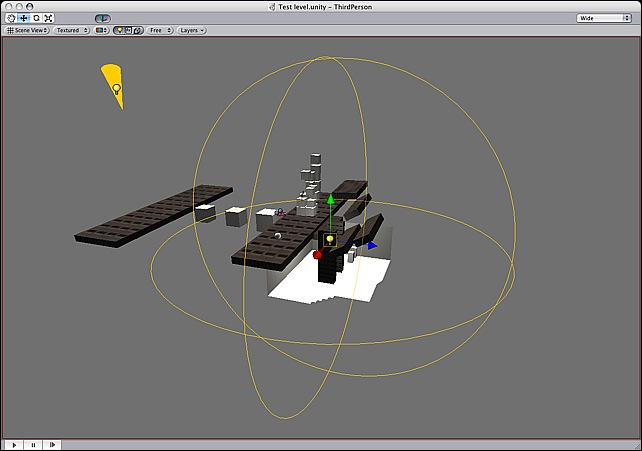
A simple, two-light setup
Lights can be added to your scene from the GameObject -> Create Other menu. There are three types of lights which we'll discuss in a moment. One a light has been added, you can manipulate it like any other Game Object. Additionally, you can add a Light Component to the selected Game Object by using Component->Rendering->Light.
There are many different options within the Light Component in the Inspector.
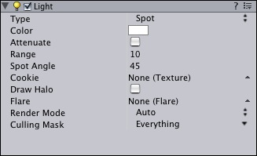
Light Component properties in the Inspector
Simply by changing the Color of a light, you can give a whole different mood to the scene.
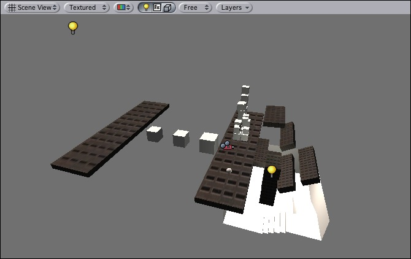
Bright, sunny lights
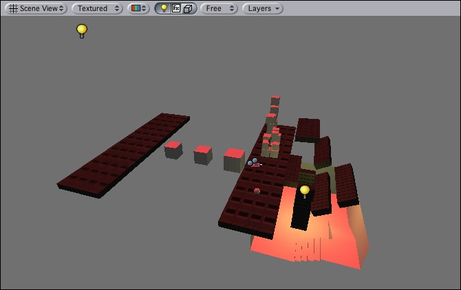
Dark, medieval lights
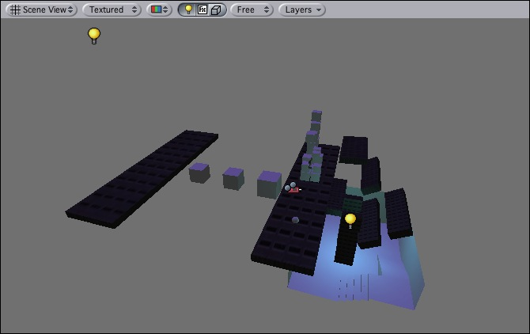
Spooky night lights
Using Lights
Light
Lights will bring personality and flavor to your game. You use lights to illuminate the scenes and objects to create the perfect visual mood. Lights can be used to simulate the sun, match light, flashlights, gun-fire, or explosions, just to name a few.
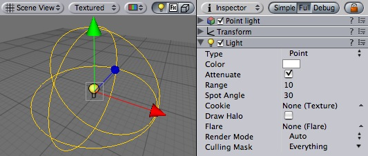
The Light Component
There are three types of lights in Unity:
- Point lights shine from a location equally in all directions, like a light bulb.
- Directional lights are placed infinitely far away and affect everything in the scene, like the sun.
- Spot lights shine from a point in a direction and only illuminate objects within a cone - like the headlights of a car.
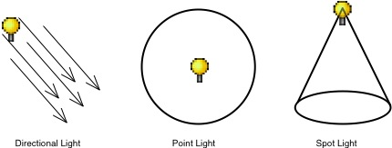
The three different light types in Unity
Properties
| Property: | Function: |
|---|---|
The current type of light object
| |
| The color of the light emitted | |
| Does the light diminish with increasing distance? If disabled, objects' brightness will "pop" as they enter and exit the light's region of influence. It can be useful to turn off when you want to do some special effects. If the light is directional, this property is ignored. | |
| How far light is emitted from the center of the object. | |
| If the light is a Spot light, this determines the angle of the cone in degrees. | |
| You can assign a texture to a light. The alpha channel of this texture is used as a mask that determines how bright the light is at different places. If the light is a Spot or a Directional light, this must be a 2D texture. If the light is a Point light, it must be a cubemap. | |
| If checked, a spherical halo of light will be drawn with a radius equal to Range. | |
| Optional reference to the Flare that will be rendered at the light's position. | |
Choose whether this light is rendered as a vertex light, pixel light, or determined automatically. For a detailed description of this tradoff, see Performance Considerations below. Options include
| |
| Use to selectively exclude groups of objects from being affected by the light; see Layers. |
Details
There are three basic light types in Unity. Each type can be customized to fit your needs.
You can use a texture that contains an alpha channel and assign it to be projected from any of the light types. This texture then becomes the cookie. The cookie's alpha mask modulates the light amount, creating light and dark spots on surfaces. They are a great way af adding lots of complexity to a scene, and hence providing a lot of atmosphere.
All builtin shaders in Unity seamlessly work with any type of light (VertexLit type shaders ignore light cookies though).
Point Lights
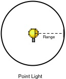
Point lights shine out from a point in all directions. They are the most common lights in computer games - typically used for explosions, light bulbs, etc. They have an average cost on the graphics processor.
Point light cookies must be cubemaps with an alpha channel. This cubemap gets projected out in all directions.
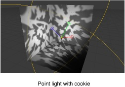
Spot Lights
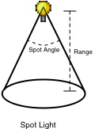
Spot lights only shine in one direction, in a cone. They are Perfect for flashlights or car headlights. They cost the most expensive on the graphics processor.
The cookie is projected down the cone of the spot light. This is good for creating an effect of light shining through a window. It is very important that the texture is black at the edges and its wrapping mode is set to clamp. For more info on this, see Texture print STDERR "WARN: nonexistent page href="tiki-editpage.php?page=class-FileTexture" , removing link ";
Directional Lights
Directional lights are used mainly in outdoor scenes for sun & moonlight. The light affect all surfaces of objects in your scene. They are the least expensive on the graphics processor.
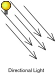
With a directional light, the cookie is projected down the center of the light's Z axis. If you want to stretch it out over a large area, set the texture's wrapping mode to 'repeat' (select the texture in the project window, and in the Inspector for the texture instead of 'Clamp' select 'Repeat').
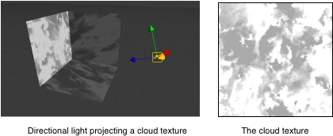
The above is a great way to add some quick detail to large outdoor scenes. You can even slide the light slowly over the scene to give the impression of moving clouds.
Performance considerations
Lights can be rendered in one of two methods: vertex lighting and per-pixel lighting. Vertex lighting only calculates the lighting at the vertices of the game models, and interpolates the lighting over the surfaces of the models. Per-pixel lights are calculated at every screen pixel, and hence are much more expensive. Some older graphics cards only support vertex lighting.
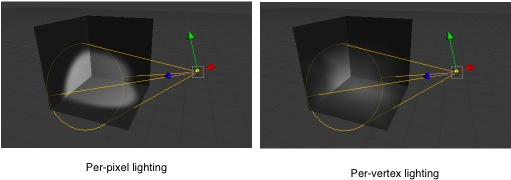
Lights have a big impact on rendering speed - therefore a tradeoff has to be made betwen lighting quality and game speed. Since per-pixel lights are much more expensive than per-vertex lights, Unity will only render the brightest lights at per-pixel quality. The actual number of pixel lights can be set as in the Quality Settings.
You can explicitly control if a light should be rendered as a vertex or pixel light using the Render Mode setting of the light. By default Unity will classify the light automatically based on how much the object is affected by the light.
The actual lights that are rendered as pixel lights are determined on an object-by-object case. This means:
- Huge objects with bright lights could use all the pixel lights (depending on the quality settings). If the player is far from these, nearby lights will be rendered as vertex lights. Therefore, it is better to split huge objects up in a couple of small ones.
See here for more information about optimizing rendering performance.
Creating Cookies
For more information on creating cookies, please see the tutorial on how to create a Spot Light cookie here.
Hints
- Spotlights with textures can be extremely effective for making light coming in from windows. In this case, disable attenuation, and set the range to just reach the floor.
- Low-intensity point lights are good for providing depth to a scene.
- Put a light near a particle system and assign a 'lighted' shader from the Particles group to its material. This works really well with projection textures.
- For high performance, use the Vertex Lit shader. This shader only does per-vertex lighting, giving a much higher throughput on low-end cards.